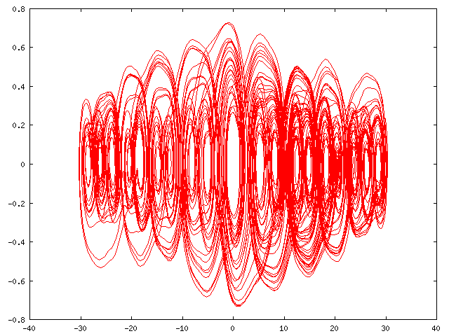

Proc. IEEE, Control of Oscillations and Chaos, Vol. 1, 88-91, (2000)
Interest and applications: for example in,
1) CNNs (Cellular Neural Networks):
using weak linear coupling between chaotic cells, hyperchaos was
obtained in a CNN array, this was demonstrated
with the n-multispiral hypercube CNN, using n-multispiral as cells.
(see the refs therin this paper).
2) secure communications: as the chaos is enhanced in such multispiral
attractors, the latter could be used for communicating with chaos
for increasing security when transmitting a useful inforamtion.
Ref: M.A. Aziz Alaoui, Rev. Mar. Sc. Phys. 1, 109-125, (1998)
Ref: M.A. Aziz Alaoui, Annales de l'ENIT -medélisation et calcul-, Vol.12(2) (1999)
Ref: M.A. Aziz Alaoui, Int. Journ. of Bifurcation and Chaos 9(6), 1009-1039, (1999)
Fig. 1. An example of amultispiral attractor with 21 spirals for modified Chua's circuit, generated by Eq.(2). See also a multispiral gallery and a multifold gallery.

A GIF animated view of this attractor is (asap) available.
 Back to the previous page
Back to the previous page
Back to Aziz Alaoui's home page